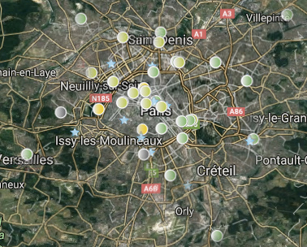

Donnees-a-voir
Sources de datas
Les données sont partout disions-nous, voici quelques pistes de celles que nous laissons derrière nous volontairement ou non, et de celles que nous pouvons produire dans un acte de citoyenneté ou de militantisme.
Vous verrez que tout au contraire de laisser partir involntairement nos précieuses informations, nous pouvons rentrer dans une démarche active, personnelle, recensant l'espace commun, que des services nous offres des données prêtes à être utilisées par nos soins ( comme ci-dessous l'exemple d'Airparif ), et que cette richesse de données va au-delà de ce que l'on peut spontanément imaginer lorsque l'on l'aborde à travers la notion de patrimoine immatériel dont vous verrez de nombreux exemples.
Facebook - politique d’utilisation des données
Pourquoi encore citer Facebook ? Facebook est cité comme exemple, cela aurait pu être Google ou une autre compagnie, le choix est simplement dû à la récurrence des polémiques qui l’entourent et à son importance puisque presque tout individu qui a une connexion Internet a un compte Facebook ( sauf peut-être vous ? ).

La CNIL avait largement reproché à Facebook son manque de transparence sur son utilisation des données récoltées, notamment sur le fait que les données sont transférées aux Etats-Unis. Depuis, le réseau social a clarifié ce que vous partagez déjà sans forcément l'avoir choisi. À titre d'exemple, car on pourrait trouver d'autres entreprises dans le même cas, que pensez-vous de cette page d'explication ?
https://fr-fr.facebook.com/privacy/explanation

Le quartier général de Facebook ( source Wikimedia Commons )
« Facebook explique donc que pour gagner de l'argent, il demande un choix d'audience à ses annonceurs. Le réseau social récolte "les centres d'intérêt, l'âge, le lieu et plus encore", bref tout ce qui est indiqué sur votre profil. Le "plus encore" concerne notamment ce que vous postez sur votre mur, mais également les pages que vous aimez. Mais le site va très loin : vous n'avez pas à être connecté pour qu'il récolte vos données. Il traque également votre nom dans tout vos "abonnements à des magazines", vos "achats dans des boutiques" et vos "programmes de fidélité". En outre, la technologie du "pixel Facebook" vous identifie lorsque vous visitez certains sites commerciaux. La seule chose dans laquelle Facebook ne se permet pas de fouiller ? Nos e-mails. Et c'est tout. »
Source : Ce qu'il sait de vos données personnelles est effrayant !
MesInfos
Le projet MesInfos explore la question des Self Data, la production, l’exploitation et le partage de données personnelles par les individus, sous leur contrôle et à leurs propres fins : pour mieux se connaître, prendre de meilleures décisions, évaluer ses décisions passées, se faciliter la vie…

OpenStreetMap
Une cartographie du monde faite par tout le monde, OpenStreetMap s'est imposée peu à peu comme la référence de la cartographie libre : une base de données extrêmement complète et extensible, la possibilité de créer autant de fonds de cartes qu'il y a de sujets, OpenStreetMap est la base de nombreux autres projets. L'équipe d'OpenStreetMap France est très active, elle a notamment créé un fond spécialement adapté au contexte français.

Airparif
Exemple d'Opendata, le site Airparif propose toute une gamme de données mises en visualisation ou brute, avec de nombreuses possibilités de filtrage, autant pour les indices de divers polluants, poussières et allergènes.
http://www.airparif.asso.fr/stations/index

Patrimoine Immatériel
Une mine d'information sur tous les sujets liés à la notion de patrimoine immatériel : données publiques, données personnelles, données des entreprises, web des données, actifs immatériels, e-administration, e-justice, métadonnées juridiques, référentiel CGU.
http://www.patrimoine-immateriel.fr

By coren (Own work) [CC-BY-SA-3.0 (http://creativecommons.org/licenses/by-sa/3.0)], via Wikimedia Commons